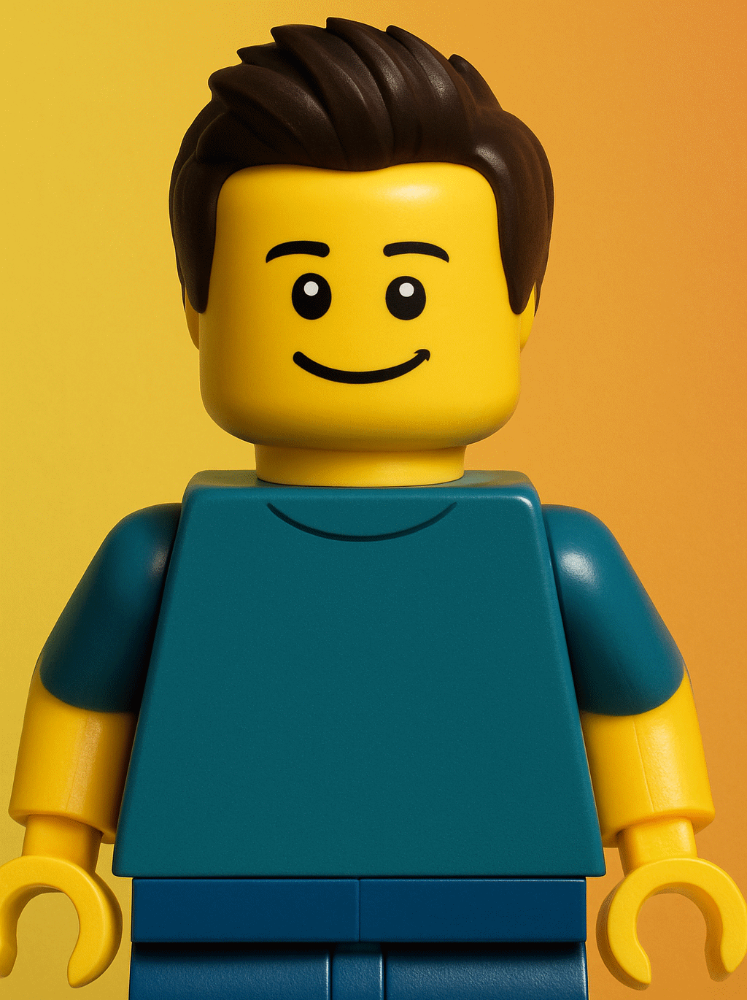

"Is Prompt Engineering the Next Programming Language?"
An Oxford style debate
Presented by Joris van Hien and Marco van de Haar
Inspiration
Hien Luu
www.linkedin.com/in/hienluu
Programming languages...
Most have you have spent years....
- Studying syntax...
- Understanding API's...

Asking the right question!

Introduction
- Purpose: Explore prompt engineering's significance
- Format: Oxford-style debate

"Oxford style debate"
A motion
Audience initial vote
Discussions
Closing arguments
Audience final vote
Winner: Team with largest shift in audience votes
The Motion
Prompt engineering: A new programming language?

What is Prompt Engineering?

Prompt engineering is the practice of crafting and optimizing inputs to AI models to get more accurate, relevant, and useful outputs.

Prompt engineering is the process of crafting and refining input instructions or queries to guide AI systems, like ChatGPT, toward producing the most accurate, relevant, or creative responses.
Initial Vote
Is prompt engineering the next programming language?
3 categories
Syntax and Structure
Specialized Skills and Expertise
Impact and longevity
Let the Debate Begin
For
Against
Syntax and Structure
For the Motion
- Prompt engineering requires structured syntax for optimal results
- Emerging best practices and patterns in prompt design
Prompt Structure
Role
Instruction
Context
Constraints & Guidelines
Output Format
Poorly written prompt
Explain how I can improve the performance of my application when retrieving information from the database.
Argument #2.
Emerging best practices and patterns in prompt design parallel those in programming constructs.
Prompting patterns and techniques
- Few shots
- Chain-of-thought
- Tree-of-thought
Example: Chain of thought

Source: Wej et al. (2022)
What about design patterns?

Source: White et al. (2023)
Example: flipped interaction
- For tasks you are not familliar with,
- You might not even know what to ask?
- But the Model probably does!
- So let's ask it, what to ask!
Let's check this out....
Syntax and Structure
Against the Motion
- No formalized syntax or strict rules
- Probabilistic outputs lead to inconsistent results
When Good Prompts Go Bad
Prompt:
Refactor this method to improve readability and performance without altering its behavior.
Use modern C# features and follow best practices for async code and exception handling.
Sounds perfect, right? Clear intent, good structure,
lots of detail…
Even the most careful prompt can hide a forest of assumptions.
Missing Typical Constructs
- ❌ No functions: Can’t extract logic into reusable named steps
- ❌ No reusable variables: Can’t store intermediate results and reference them later like code
- ❌ No control flow: Can’t chain or conditionally apply prompts
Unpredictability
- Outputs can vary from run to run
- Hard to guarantee deterministic behavior
- Relies on model’s training data and random sampling
Even basic programming prompts yield inconsistent code:
Write a C# method that validates an email address.
- Regex-based — good, but brittle
- MailAddress try-catch System.Net.Mail.MailAddress — legit, but overkill?
- Naive check —
Contains("@")and"."😬 - Style and error handling vary every time
Same input. Different code. No guarantees.
Knowledge and Expertise
For the Motion
- Requires understanding AI model workings
- Learning curve comparable to programming languages
- Advanced applications like RAG and agents
Next Token Generator

#1 Specialized knowledge
Tuning parameters
Sampling options and Temperature
Demo: Effects of prompt parameters (e.g., temperature)
#2 Learning curve
A learning curve that parallels learning a programming language
The prompt report

1565 papers
~100 prompting techniques
#3 Evolution!
How we interact with these models evolves!
- Reasoning models, deep research
- RAG
- Agentic A.I.
Knowledge and Expertise
Against the Motion
- Natural language lowers the barrier to entry
- Lacks the complexity of traditional programming
- Relies heavily on communication skills
Fewer Prerequisites
- 🧠 No need for algorithms or data structures — You don’t implement mergesort to write a good prompt.
- 💬 Clarity beats cleverness — It’s more about expressing intent than optimizing logic.
- 🎯 You ask questions, not define behavior — It’s persuasion, not precision.
Understanding ≠ Programming the Model
- 📘 Understanding how LLMs work helps — but it’s not programming them
- 🎛️ Prompting is about influencing output, not controlling execution
- 🧠 Model behavior is statistical, not deterministic — you don’t write code, you shape probability
Knowing how a language model works doesn’t mean you’re writing in a language.
Tuning Parameters
- 🎛️ Temperature doesn’t define logic — it shapes personality
- 🎲 Same prompt, different mood — no consistent behavior
- 🧱 Programming means control — this is suggestion + luck
Tuning Parameters
Write a function that returns the nth Fibonacci number.
- 🧊 Temp 0.0: Iterative function, clean, minimal, accurate
- 🔥 Temp 1.0: Recursive version, maybe with comments, or “for fun” in Python instead of C#
You’re managing creative entropy.
Impact and Longevity
For the Motion
- Universal A.I. Adaption
- Protocols
Explosion of A.I. centered dev tooling


Example: Windsurf editor

These systems are maturing.
- MCP - Model Context Protocol
- A2A - Agent to Agent protocol TODO
Impact and Longevity
Against the Motion
- Prompting is a trend, not a transformation
- AI progress could make prompting obsolete
- Programming remains essential for control and scale
Obsolescence by Design?
- LLMs are improving at interpreting vague input
- Future models may require less prompt "engineering"
- Prompting could be absorbed into broader tooling
We Still Need Code
- Prompting can't replace programming for critical systems
- Performance, reliability, and scale demand code
- AI still relies on human-authored infrastructure
Closing Arguments
Closing Arguments
For the Motion
- Prompt engineering is evolving into a structured discipline
- Clear patterns and best practices are emerging
- Growing ecosystem of tools and frameworks
Vote for the Future!
Vote for the next paradigm shift in software development!
Closing Arguments
Against the Motion
- Prompt engineering is not a programming language
- It lacks formal syntax and semantics
- Highly dependent on the underlying AI model
Key Evidence Against
- Inconsistent results across models
- No compiler or formal verification
- Rapid changes in best practices
- Limited debugging capabilities
Time to Vote
Has prompt engineering earned its place as the next programming language?
Check out the slides?

Or on slack:
#topiconf-prompt-engineering